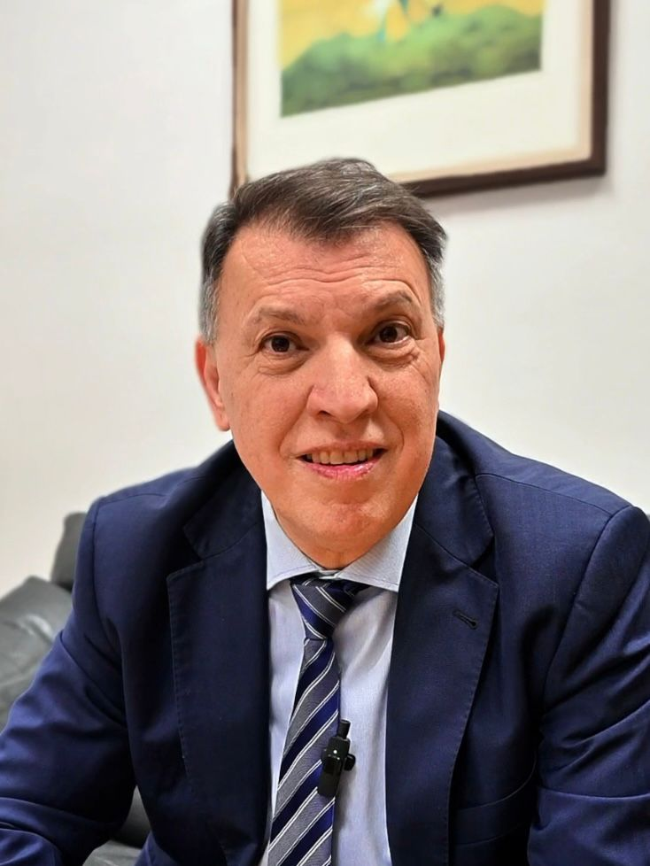
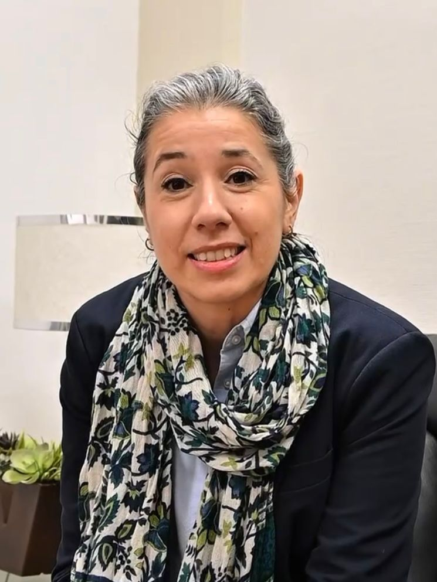

Durante mis prácticas en la Escuela Técnica Superior de Ingeniería de Telecomunicación de la Universitat Politècnica de València participé en la gestión de contenidos web, producción audiovisual y desarrollo de herramientas digitales para la escuela.
WEB EN PRODUCCIÓN
Desarrollo de una herramienta web interactiva para visualizar destinos Erasmus de la ETSIT-UPV, integrando un formulario de recopilación de experiencias estudiantiles y un mapa interactivo de universidades europeas mediante JavaScript y Leaflet.
Serie de entrevistas breves a investigadoras que representan distintas áreas de conocimiento de la escuela: telecomunicaciones, matemáticas, tecnologías multimedia e ingeniería física.
Entrevistas realizadas a profesionales y divulgadores que visitaron la ETSIT para compartir su experiencia en tecnología, ciencia y sociedad.

Magistrado y divulgador jurídico

Investigadora y divulgadora científica
Cobertura audiovisual de actividades y eventos organizados por la comunidad universitaria de la ETSIT.